Cartes postales proposées par Thierry Meynier sur son facebook et sur le site du SESA


Cartes postales


Photos aériennes du village


Photo des travaux d'installation du tout à l'égout


Photos de la carrière de dolomie


Cartes postales

Photo aérienne du village


Cartes postales de Roquefort, Buillac (hameau de Roquefort), la carrière de talc, la route D17


Photo aérienne de Roquefort

Photo aérienne de Buillac


Cartes postales


Photo aérienne du village


Cartes postales


Photo aérienne du village
Voir plus bas les photos du village prises par les monuments historiques
L'Aude sépare Escouloubre-les-Bains de Carcanières-les-Bains, villages qui sont chacun dans un département différent (Aude / Ariège)
Dans ce paragraphe en plus des cartes de Thierry Meynier, je rajoute celles trouvées sur le site de © Inventaire général Région Occitanie par rapport aux stations thermales1

 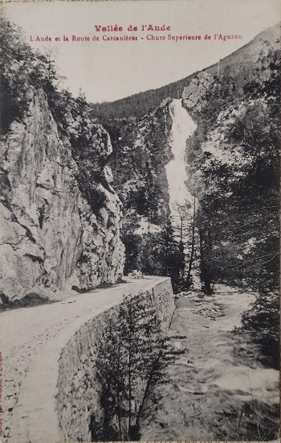
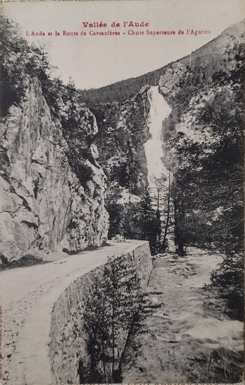


 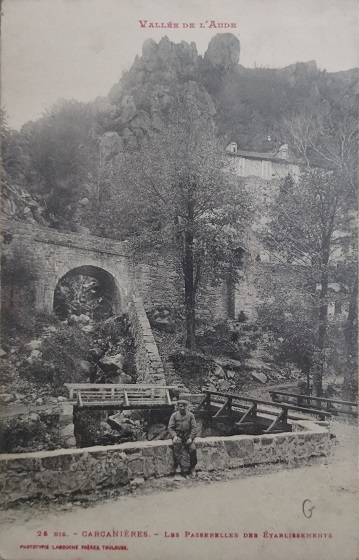
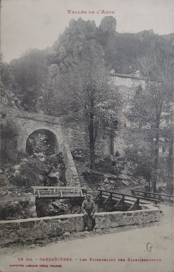


 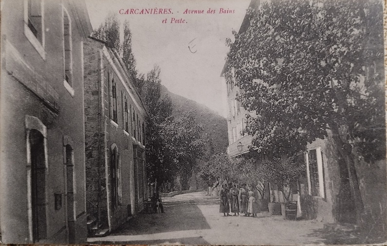
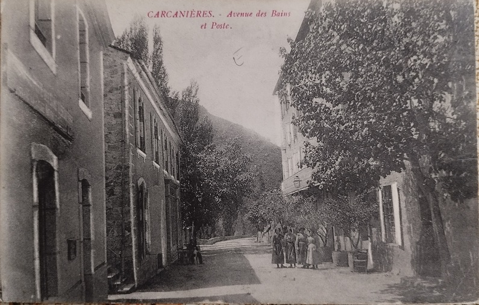


 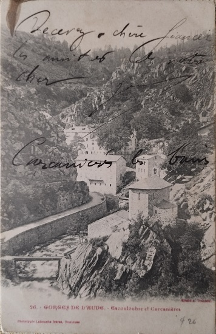
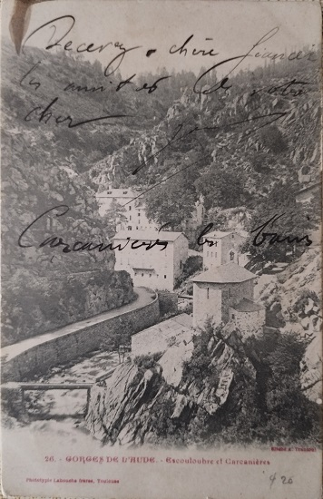


 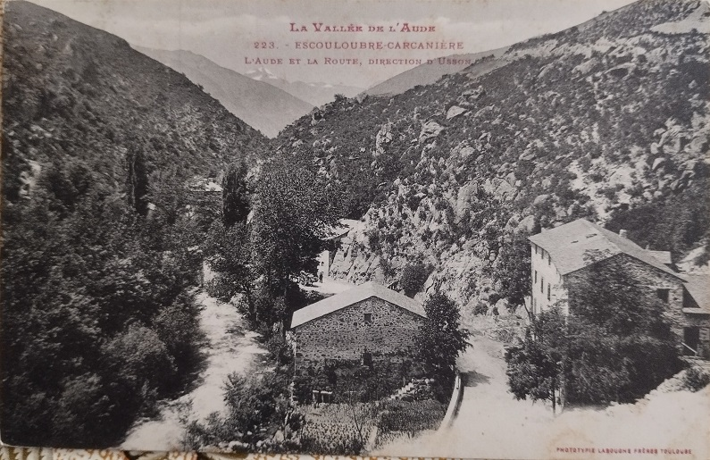
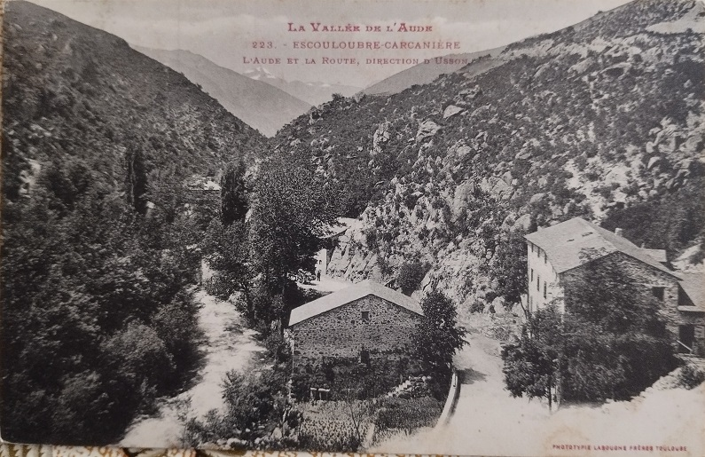


Effets merveilleux d'une cure à Escouloubre les Bains1
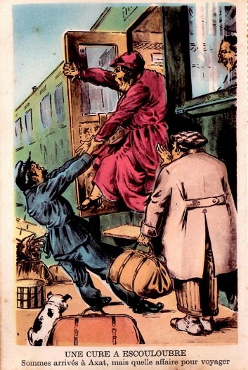 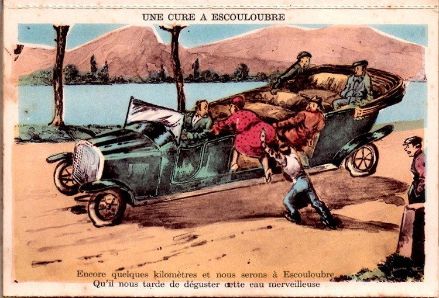 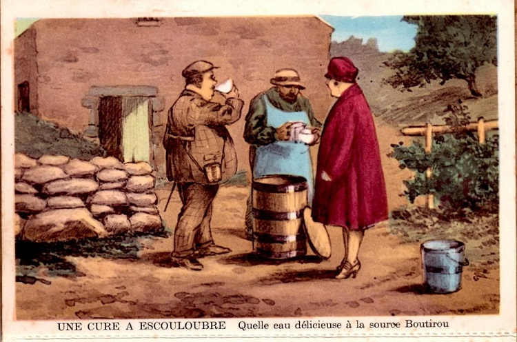 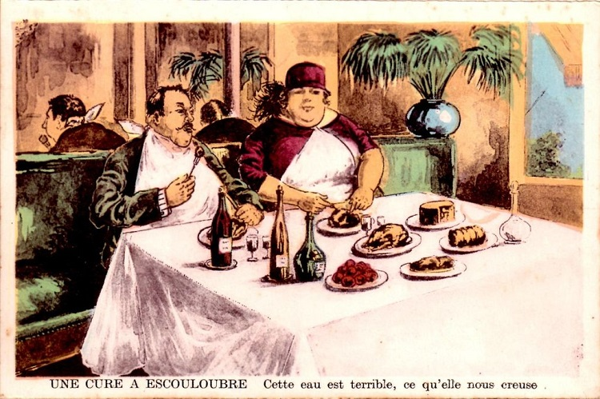 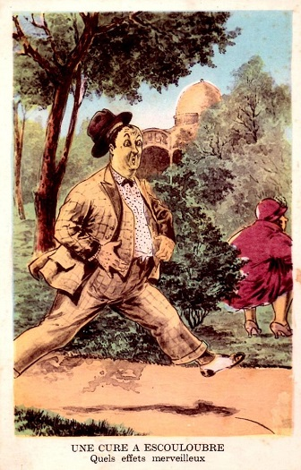 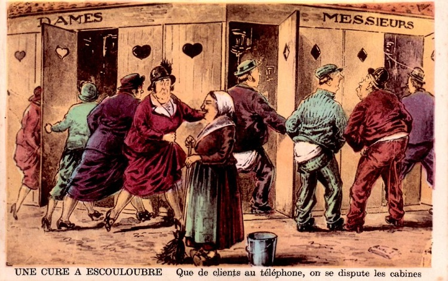 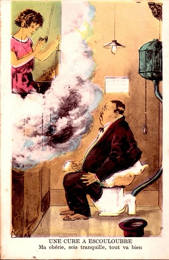 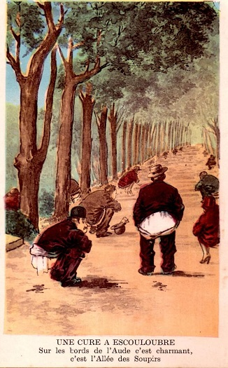 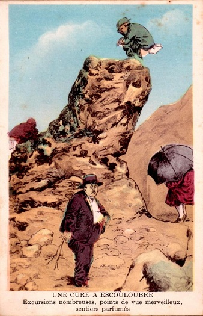 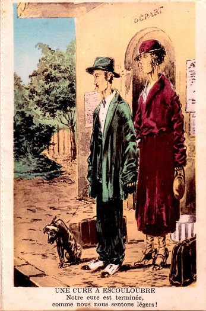


Cartes postales


Photo aérienne du village
Je vais essayer de recencer si dessous les articles relatives à construction puis à l'aménagement de la route n°17
Une route départementale de Quillan à Roquefort appelée N°17 est envisagée dè 1813, même si son trajet complet ne sera réalisé que beaucoup plus tard. Voir pour plus de détail la page sur l'historique de la route de la Pierre Lys.
Rapports et délibérations / Conseil général du département de l'Aude / 01 janvier 1839
Route n.° 17 de Quillan à Roquefort.
La route n.° 17 n'est, vous le savez, Messieurs, que muletière ; son défaut de largeur la rend très dangereuse sur certains points ; il y aurait nécessité de la porter à trois mètres, partout où le terrain n'est pas difficile. Dans les gorges de la Pierre-Lys et de St.-Georges, on la défendrait par des parapets et l'on pratiquerait des gares de distance en distance pour que les mulets chargés pussent s'y croiser. Conformément au voeu que vous avez exprimé dans vos précédentes sessions, ces travaux sont l'objet de conférences entre les ingénieurs civils et le génie militaire ; il faut espérer que ces derniers ne mettront pas d'obstacle à des améliorations réclamées par les besoins de l'industrie et la sûreté publique.
M. l'Ingénieur en chef propose d'affecter à ces travaux d'amélioration une somme de 5,000 fr., en attendant qu'il puisse s'occuper d'un projet complet pour la continuation de la route du côté de Ste.-Colombe et de Roquefort. Je vous propose de porter cette somme à 8,863 fr. 28 c. et de l'allouer au chapitre 24, 3ème section, article 7.
Différences entre les propositions du Préfet et celles de l'Ingénieur en chef.
[...]2° Pour la troisième section, en ce que j'ai supprimé les 10,000 fr. proposés pour la route n° 14, à laquelle 4,301 fr. seront accordés sur le budget de report, et réparti ces 10,000 fr. entre les routes n° 12, 16 et 17.
Rapports et délibérations / Conseil général du département de l'Aude / 01 janvier 1845
Les routes qui offrent encore des parties en lacunes et sur lesquelles doivent se répartir les fonds extraordinaires votés ou à voter pour leur achèvement, sont au nombre de neuf : [...]
4.° Route n.° 17, de Quillan à Roquefort. Cette route, dont une grande partie va se trouver supprimée par suite de la rectification de la route royale n.° 117, entre Caudiés et Quillan, n'est ouverte, depuis Belvianes jusqu'à Ste.-Colombe-sur-Guette, que comme route muletière ; elle est en lacune entre Ste.-Colombe et Roquefort, sur une longueur de 4,546 00
Etat statistique de la situation des routes et celui de la situation des travaux - Dépenses à faire en 1846[...]N°des route : 17 ; Désignation des routes et des objets de dépenses : De Quillan à Roquefort ; Longueur des parties de route - à l'entretien 14009 » ; - en construction : 0 ; - en lacune : 4546 » ; - Totale : 18555 », Fonds accordés en 1845 - 1re Section Entretien : 1700 00 ; - 2° Section Entretien et grosses réparations : 500 00 ; 3° section Travaux Neuf : » ; Fonds demandés en 1846 - 1re Section Entretien : 2200 00 ; - 2° Section Entretien et grosses réparations : » ; 3° section Travaux Neuf : »
Désignation des routes : 17 De Quillan à Roquefort | Indication des parties ou des travaux | 1° Elargissement entre Belvianes et la Pierre-Lis (Longueur des parties - projetées 1100 | exécutées : 1100 | Montant des dépenses autorisées : 2993 37 | Sommes dépensées - avant 1844 : 2993 37 | - en 1844 : 0 | - Total : 2993 37 | Observations : Ce travail a été fait en 1839, à l'occasion du passage du Duc d'Orléans ; 1000 fr. ont été imputés sur les fonds facultatifs.) ; 2° Rectification près de St.-Martin-Lis (Longueur des parties - projetées 803 | exécutées : 803 | Montant des dépenses autorisées : 5200 00 | Sommes dépensées - avant 1844 : 5200 00 | - en 1844 : 0 | - Total : 5200 00 | Observations : Terminés en 1838 ) ; 3° Rectification entre le pont de Rebenty et Axat (Longueur des parties - projetées 1995 | exécutées : 1995 | Montant des dépenses autorisées : 17317 05 | Sommes dépensées - avant 1844 : 17317 05 | - en 1844 : 0 | - Total : 17317 05 | Observations : Ces travaux sont terminés depuis 1842 ; on a payé 1,317 Fr. 05 c. d'indemnités de terrains)
Récapitulation
Indication des parties ou des travaux : N° 17 - de Quillan à Roquefort | Longueur des parties - projetées : 3898 | - exécutées : 3898 | Montant des dépenses autorisées : 26510 42 | Sommes dépensées - avant 1844 : 25510 42 | - en 1844 : 0 | - Total : 25510 42
Périodes d'exécution des travaux (1847 - 1854) : Dans les six premières années on aurait soldé les travaux des routes n.° 16, 18, 19, terminé les routes n.° 8, 12, 17 , 20 et 22 et les roules n.° 3 et 23 seraient contectionnées sur plus de la moitié de leur étendue et terminée dans deux ans.
Etat des routes départementales en construction ou en lacunes indiquant, à partir du 1er janvier 1847, les dépenses à faire pour leur achèvement
Numéro et désignation des routes : 17. De Quillan à Roquefort. | Indication des parties de route : Entre Ste.-Colombe et Roquefort | Longueur des parties restant à ouvrir : 4546 | Dépense à faire au 1er janvier 1847 : 20000 | Total par route : 20000
Renseignements sur la situation générale des Routes départementales prévues au 1er janvier 1847, en tenant compte des résulats à obtenir en 1846, au moyen des crédits demandés pour cet exercice.
N° des routes : 17 | dénomination | De Quillan à Roquefort | Date de décret ou de l'ordonnance du classement | 7 janvier 1813 | Longueur des parties - en l'état d'entretien : 14009 | - en construction : 4546 | - en lacunes : » | Sommes présumées nécessaires à partir du 1er janvier 1847 - pour terminer les parties en construction : 0 | - Pour construire les lacunes : 20000 | - Total : 20000 | Epoque à laquelle on présume que les routes seront arrivées à l'état d'entretien : » | Moyenne de la dépense par mètre courant d'entretien - suivant les fonds alloués pour 1846 : 0,157 | - Pour constituer l'entretien normal : 0,156 | Sommes totales - affectées à l'entretien en 1846 : 2200 | - nécessaires à l'entretien quand les routes seront terminées : 2900
Le conseil demande : Route départementale n°17 : 4.° Que des fonds soient alloués au budget de 1846 pour l'établissement de parapets et l'amélioration du passage de Ste.-Colombe-sur-Guette à Roquefort;
Rapports et délibérations / Conseil général du département de l'Aude / 01 janvier 1850
Je vous propose d'arrêter conformément aux tableaux suivants, la répartition des sommes à affecter , en 1851, à ces deux natures de travaux.
TABLEAU des crédits sollicités pour l'entretien des routes en 1851.
N° des routes | Désignation des routes |Montant de leur entretien
17 | De Quillan à Roquefort | 3,100
...
Route n.° 17. Entre le col de Lasporles et Roquefort : Les travaux de cette route marchent avec activité, la construction de parapets en pierre, sur tous les murs de soutènement a été reconnue indispensable, pour prévenir des accidents qu'on aurait à regretter, Ces travaux motivent l'accroissement de dépense que M- l'Ingénieur réclame dans son projet de budget.
En définitive, M. l'Ingénieur en chef demande que la somme provenant de l'imposition de 8 c-, autorisée par la loi du 30 avril 1846, soit affectée aux travaux neufs des routes départementales n° 3, 8 , 12 , 17 , 20 , 22 et 23.
[...]route 17: 4,453 98
SOUS-CHAPITRE 17. Travaux des Routes départementales et des ouvrages d'art qui en. font partie[...]Art. 5. Route n.° 17, de Quillan à Roquefort. 3,100 »
[...]4. Grosses réparations sur la route n.° 17. 306 »
3éme SECTION. —SOUS-CHAPITRE 24.
Art. 4. Construction de la route n.° 17 4,453 98
Rapports et délibérations / Conseil général du département de l'Aude / 01 avril 1873
Route départementale n° 17.
Elargissement du pont d'Axat.
Depuis longues années, les habitants de la commune d'Axat se plaignent de l'insuffisance de la largeur du pont établi sur la route départementale n° 17, qui relie entr'elles les deux parties du village.
M. le comte de Dax a offert à la commune de céder gratuitement la partie de son jardin nécessaire pour opérer l'élargissement du pont et en rendre la circulation plus facile et moins dangereuse pour le roulage.
Par sa délibération du 12 juillet 1872 , le Conseil municipal de cette commune a accepté l'offre faite par M. le comte de Dax et a proposé de fournir, en les tirant de la forêt communale, les bois nécessaires pour les cintres, sauf à les reprendre après le décintrement de ce pont, si l'administration veut en opérer la reconstruction.
Par une autre délibération, en date du 26 août 1872, le Conseil municipal a voté une imposition extraordinaire de 500 francs, qui sera prélevée en 1873, pour concourir à la reconstruction de ce pont.
MM. les Ingénieurs des ponts et chaussées, dans leur rapport en date des 31 août et 6 septembre 1872, démontrent que le pont sur l'Aude et ses abords, dans la traversée d'Axat, présentent des dispositions très gênantes et même périlleuses pour la, circulation.
Le pont, composé d'une grande et d'une petite arche, est extrêmement étroit, sauf dans la partie située au-dessus de la petite arche, qui a été reconstruite et élargie il y a quelques années. Un dos d'âne prononcé existe au sommet de la grande arche ; enfin, aux abords du pont, la route, retenue par des constructions, offre des coudes brusques et des pentes rapides.
L'amélioration de cet ouvrage est donc nécessaire, et sous ce rapport les voeux du Conseil municipal me paraissent légitimes.
Mais la perspective de l'achèvement de la route nationale n° 118 crée ici une situation particulière. Cette route emprunte la route départementale n° 17 jusqu'à Axât, puis le tracé, restant sur la rive gauche de l'Aude, abandonne le pont actuel pour aller franchir la rivière à 2 kilomètres en amont et retrouver ainsi la route départementale. Quand le tronçon de la route nationale n° 118, qui doit remplacer la traverse d'Axat, sera exécuté, ce qui ne peut avoir lieu avant cinq ou six ans, le roulage cessera de suivre la route départementale, qui sera alors déclassée, et parcourra la route nationale.
Cependant, en présence du développement de la circulation locale et du transport des bois, développement qui sera considérablement augmenté par l'exécution du chemin de fer de Quillan à Carcassonne, il me semble que la reconstruction du pont d'Axat devrait être exécutée dans un intérêt général.
MM. les Ingénieurs évaluent la dépense à faire pour élargir le pont à environ 3,000 fr., et la reconstruction totale de l'arche, qui permettrait de supprimer les rampes actuelles, coûterait environ 4,700 fr.
J'ai l'honneur de vous soumettre le dossier de cette affaire, en vous priant d'examiner s'il y a lieu de voter en principe une subvention de 2,000 fr. à inscrire au budget rectificatif dans votre prochaine session.
Ce vote permettrait à MM. les Ingénieurs d'étudier le projet, et les intéressés, ainsi que la commune d'Axat, seraient mis en demeure de réaliser la somme nécessaire pour couvrir la dépense avec la subvention accordée par le Conseil général.
La question ne sera entièrement résolue que lorsque le projet définitif aura été dressé et les engagements particuliers produits.
Séance du 25 avril : Route départementale n° 17. Pont d'Axat.
(Rapport du Préfet, page 10. [voir Ci-dessus])
Au nom de la Commission des routes, M. Berlioz donne lecture du rapport suivant :
« Les habitants de la commune d'Axat se plaignent depuis longtemps de l'insuffisance de la largeur du pont établi sur la route départementale n° 17, qui relie entre elles les deux parties du village, et des difficultés que l'on a de le traverser à cause de la forme de la grande arche, construite à dos-d'âne.
» Par son rapport, en date du 31 août 1872, M. l'ingénieur des ponts et chaussées, Balandier, demande au Conseil général d'allouer sur le budget de 1873 une somme de 2000 fr. qui, jointe aux sacrifices faits par la commune d'Axat et par M. le comte de Dax, servirait à reconstruire la grande arche et à élargir le pont. Ces sacrifices seraient, de la part de la Commune, une somme de 500 francs une fois payée ; de plus elle fournirait, en les tirant de la forêt communale, les bois nécessaires pour les cintres, sauf à les reprendre après le décintrement. Les sacrifices de M. le comte de Dax se borneraient à céder gratuitement la partie de son jardin nécessaire pour opérer l'élargissement du pont.
» Votre Commission, Messieurs, a considéré que la route nationale n°118 va être terminée dans peu de temps; alors, tout le roulage passant sur la rive gauche, de l'Aude et évitant le pont d'Axat, l'intérêt du département ne sera plus en jeu dans cette question. Votre Commission est donc d'avis de ne pas reconstruire l'arche de ce pont.
» Quant à l'élargissement projeté, nous pensons que le département ne devrait y contribuer que tout autant, que M. le comte de Dax, le propriétaire le plus directement intéressé à cet élargissement, se joindrait, dans une plus large mesure, à la commune d'Axat, et offrirait comme part contributive, une somme qui ne devrait pas être inférieure à la moitié de la dépense totale, évaluée à 3000 francs par MM. les Ingénieurs des ponts et chaussées.
» Votre Commission est donc d'avis d'ajourner à plus tard toute, décision à ce sujet. »
Le Conseil adopte.
Accident lors de l'élargissement de la route départementale n°17 ayant entrainé la mort de mon arrière-arrière-arrière-grand-père le 20 mai 1862
Voir l'article dans la page presse
Une route nécessitant un entretien régulier - ici suite à un orage
Le courrier de l'Aude, 17 juin 1866
Pendant la soirée de mardi dernier, un violent orage a éclaté dans la vallée de l'Ayguette, l'un des principaux affluents de l'Aude dans le canton d'Axat.
La roule départementale n° 17 a eu beaucoup à souffrir entre le Cap de Bouc et le village de Sainte-Colombe. La circulation s'est immédiatement trouvée interceptée sur près de trois kilomètres. Dès le lendemain, le conducteur des Ponts et chaussées en résidence à Quillan, se rendait sur les lieux pour faire exécuter d'urgence les travaux les plus indispensables au rétablissement des communications, d'abord pour les piétons et ensuite pour les voitures.
Proposition d'une nouvelle appellation pour la route de Quillan à Roquefort suite "conversion" de la partie de Quillan au cap-de-bouc en route impériale 118
Le courrier de l'Aude, 13 août 1868
La conversion en route impériale de la majeure partie de la route départementale n° 17 réduit cette dernière voie à une longueur de 8,924 mètres, entre le pont de Bayra et Roquefort. En conséquence, le Conseil exprime le désir 1° qu'elle soit déclassée et désignée sous le nom de chemin d'Axat à Quérigut par Carcanières ; 2° que le tracé actuel soit modifié pour éviter l'affreux passage à travers le village de Roquefort.
Le Conseil exprime en outre le vœu qu'un chemin venant s'embrancher, à Sainte-Colombe-sur-Guette, au futur chemin d'Axat à Quérigut, soit établi à travers la vallée de l'Ayguette, en passant dans le village de Counozouls pour aller rejoindre la limite du département des Pyrénées-Orientales.
Une anecdote sur les dangers de la RD 17 au cap de Bouc
Le courrier de l'Aude, 25 septembre 1904
AXAT. - Accident.
M. Baron, négociant à Fabrezan, revenait, avec une voiture chargée de marchandises, attelée de deux chevaux, de la foire de Roquefort-de-Sault.
Tout alla bien jusqu'à la descente très rapide de Cap-de-Bouc ; en cet endroit, les chevaux, entraînés par la voiture, sautèrent le parapet, qui arrêta, heureusement, le véhicule ; les animaux, un moment suspendus, en se débattant coupèrent les traits qui les retenaient et tombèrent dans un précipice d'une hauteur de 7 à 8 mètres, sans se faire aucun mal.
Mme Baron et ses enfants qui étaient dans la voiture, en ont été quittes pour la peur.
Les articles suivant portent sur une dispute sur l'intérêt d'améliorer la route au niveau du cap de bouc, la partie basse de la RD 17 en amont des gorges de St Georges.
Le courrier de l'Aude, 25 mai 1905
ARRONDISSEMENT DE LIMOUX
Écho du Conseil Général
Nécessité de rectifier entièrement le chemin n° 17 d'Axat à Roquefort-de-Sault
M. François de Neufchateau nous communique l'article qu'il vient de publier dans le Réveil de l'Aude. S'il est vrai que l'administration forestière va laisser déboiser les forêts existantes, Le Conseil général aurait tort de continuer à s'éboursiller pour opérer ailleurs des reboisements.
Nous avons appris, par la Dépêche du 12 courant, que le Conseil général de l'Aude, dans sa séance du 3 mai, avait approuvé définitivement le projet d'amélioration des tournants de Cap-dé-Bouc, dressé à la demande de la Société Ader et Cie, des forges de
Quillan.
Pour ceux qui connaissent le pays et les besoins de sa population, cette amélioration n'a qu'un intérêt superficiel. En effet, quand les tournants de Cap-dé-Bouc auront été rectifiés, le chemin n° 17 conservera toujours, en amont de la rivière de l'Aiguette, particulièrement entre Sainte-Colombe-sur-Guette et Roquefort-de-Sault, ses autres tournants, non moins dangereux qu'à Cap-dé-Bouc, et sa déclivité anormale qui rendent les transports si onéreux et si difficiles. Somme toute, les rouliers de Sainte-Colombe-sur-Guette, de Counozouls, de Roquefort-Buillac et du Bousquet n'auront pas gagné grand'chose à cette réparation insignifiante, pour ainsi dire, tant elle est insuffisante.
Si MM. les Membres du Conseil général ont cru faire œuvre réellement utile, ils se sont trompés. Nous sommes désolés de leur enlever cette illusion ; mais, comme on le verra plus loin, notre désir est de les éclairer.
Mieux renseigné qu'il ne l'a été, le Conseil général aurait su que la Société Ader et Cie (qui, nous l'avons déjà dit, a entrepris la déforestation du domaine des forges de Quillan), est en train de construire, précisément au dessus des tournants de Cap-dé-Bouc, sur le flanc escarpé de la montagne dominante, un chemin funiculaire destiné à descendre les bois de la forêt de Resclause jusqu'au dit chemin n° 17, — et que cettte Société est d'autant plus intéressée à la rectification des dits tournants qu'elle ne peut, en l'état actuel, y faire circuler ses bois sans sectionner leur longueur, au grand détriment de leur valeur commerciale.
Il aurait appris que la dite Société paraît, au dire de tous, ne pas devoir constituer une industrie durable et bienfaisante au pays ; elle ne serait, au contraire, qu'une industrie passagère sans profit pour la population des communes environnantes dont elle entraînerait fatalement la ruine et l'exode, après avoir dévasté les forêts qui la font vivre.
Le Conseil aurait alors conclu nécessairement que la contribution de 36 010 aux dépenses prévues, offerte par la dite Société, n'était pas acceptable ; parce qu'il restait 64 010 à la charge du budget départemental et parce que l'on n'avait pas le droit de grèver ainsi ce budget au seul bénéfice d'une entreprise particulière, peu intéressante parce qu'elle ne sera probablement pas durable étant donné la rapidité de ses exploitations forestières et, par conséquence, nuisible au pays. Il aurait enfin décidé de renvoyer le susdit projet afin qu'il fut étudié et dressé d'une façon plus complète et plus conforme aux intérêts de la population montagnarde.
Mais le Conseil général a été mal informé et il s'est laissé aller jusqu'à déroger à la règle immuable qu'il s'était imposée de différer, jusqu'en 1906, tout classement, modification ou amélioration de chemin qui ne seraient pas justifiés par un motif sérieux d'urgence et d'intérêt général bien caractérisés, ce qui n'est pas évidemment le cas dont nous venons de nous occuper.
Nous aurions le droit, d'après ce qui précède, de demander à nos mandataires, des explications qui les mettraient dans un cruel embarras, mais nous serons généreux et, pour cette fois, nous n'insisterons pas davantage. Désormais prévenus des inconvénients résultant d'une trop grande complaisance envers des personnalités plus ou moins influentes, nos mandataires prendront, nous en sommes persuadés, les mesures nécessaires pour qu'il ne soit plus fait un emploi aussi inconsidéré des deniers publics.
Il est encore temps, d'ailleurs, de bien faire et de réparer l'erreur que nous avons signalée : l'Aministration départementale n'a qu'à faire son devoir et rien que son devoir.
Carcassonne, le 20 mai 1905.
François de NEUFCHATEAU.
Propriétaire à Roquefort-du Sault ( Canton d'Axat ).
Le courrier de l'Aude, 11 juin 1905
ARRONDISSEMENT DE LIMOUX LIMOUX. — La déforestation de la montagne. — Nous avons reproduit une série d'articles de M. de Neufchateau au sujet de la déforestation de nos montagnes. M. Nicoleau, conseiller général de Quillan lui ayant répondu dans le Radical du Midi, M. de Neufchâteau réplique par ce nouvel article :
Ma réponse à M. Nicoleau, conseiller général, maire et marchand de bois a Quillan. — Je ne m'occupais pas de M. Nicoleau ; mais il tient apparemment ce que je m'occupe de lui. (Voir sa lettre du 30 mai adressée au Radical du Midi du 4 courant). Qu'il soit satisfait !
M. Nicoleau se reconnaît coupable d'avoir induit en erreur ses collègues de l'Assemblée départementale en leur conseillant d'adopter le projet de rectifition des tournants de Cap-dé-Bouc sollicité par la Société Ader et Cie. Cet aveu, bien que pourvu de nombreux artifices, me met complètement à l'aise vis-à-vis de lui. Il est donc avéré qu'il est responsable d'une décision qui facilitera à cette Société la déforestation de nos montagnes. Qu'il me permette de ne pas l'en féliciter !
M. Nicoleau ajoute que, depuis trente ans, il se préoccupe des dangers présentés par les tournants de Cap-dé-Bouc pour les rouliers du pays. C'est une pensée très humaine ! Mais pourquoi a-t-il tant attendu pour faire le geste créateur ? La venue providentielle de la Société Ader et Cie était-elle donc nécessaire pour le décider ? Cette hypothèse est assez vraisemblable. En effet, depuis l'installation de cette Société aux Forges de Quillan, tout le monde a pu remarquer l'attrait particulier du canton d'Axat pour M. le maire de Quillan. On y rencontre ce magistrat sur tous les chemins en compagnie des agents de la dite Société ; il y fait preuve d'une activité dévorante et, quand il faut, par exemple obtenir la majorité d'une commune en faveur du classement d'un chemin nécessaire aux exploitations intensives de cette entreprise, ce n'est pas le Conseiller général titulaire du canton d'Axat qui agit c'est M. Nicoleau.
Sans doute, les affaires sont les affaires et M. le maire de Quillan qui, avant tout est marchand de bois, a songé naturellement à donner un peu plus d'extension à son commerce. On ne peut donc pas être surpris qu'il prenne si chaudement le parti d'une Société réputée millionnaire à laquelle il est, d'ailleurs, inféodé.
Comme négociant, M. Nicoleau a parfaitement raison ; mais, comme conseiller général et comme candidat au Senat, il se doit plutôt aux intérêts de la collectivité surtout quand cette collectivité est menacée par les conséquences d'une suite d'exploitations excessives qui ruineront fatalement les forêts et la région et, par contre-coup, la population qui y gagne sa vie.
M. Nicoleau croit triompher en signalant l'erreur de direction que j'ai commise au sujet du funiculaire destiné aux bois de la forêt de Resclause. Certes, il est exact aujourd'hui que ce funiculaire doit aboutir au port de Sabarac sur la route nationale n° 118 ; mais M. Nicoleau néglige de dire que le projet funiculaire a été modifié depuis peu. Je l'ignorais et je viens de l'apprendre. Le tracé primitif, tel que je l'ai constaté de visu à la fin de février dernier, le faisant descendre par le terrain dit Labérieu et aboutir sur le chemin n° 17, au-dessus de la Métairie de Marquet c'est-à dire Cap de Bouc. J'étais donc de bonne foi.
Quoi qu'il en soit, je n'en ai pas moins raison de soutenir que la rectification des tournants de Cap-dé-Bouc a été demandée pour les besoins de la Société Ader et Cie et à son seul profit. Tout le monde sait, en effet, que la Société Ader et Cie fait travailler, en ce moment, à l'établissement d'un cable métallique entre le lieu dit le Roc Rouge et le chemin n° 17, précisément en amont des dits tournants, afin d'évacuer les gros bois de la forêt de l'Escarassou qui sont presque tous abattus. — N'est-il pas évident que la rectification exclusive de Cap-dé-bouc n'a d'autre objet que le passage de ces bois ? Cela saute à tous les yeux non prévenus !
Somme toute, la bruyante réfutation de M. Nicoleau se borne à signaler une erreur de détail. A part cette erreur, le fond de l'article incriminé, du 20 mai dernier, reste victorieusement debout et j'ose espérer qu'il sera pris en considération par l'Assemblée départementale lors de sa prochaine session. J'ose même espérer que M. le Conseiller général du canton de Quillan et, pour ainsi dire, du canton d'Axat, profitera de l'occasion pour témoigner sa sollicitude vis-à-vis des rouliers de la montagne a d'une façon plus effective que dans le passé, et qu'il voudra bien employer sa haute influance à l'amélioration très prochain de l'entier chemin n° 17, c'est-à-dire depuis les tournants de Cap-dé-Bouc jusqu'à Roquefort-de-Sault — Ce faisant, il satisfera les électeurs, ses amis des exploitations Ader et Cie et moi-même.
Je ne vois plus rien, dans les allégations de M. le Maire de Quillan, qui soit susceptible d'être discute sérieusement. Je n'en finirais pas si je voulais suivre M. Nicoleau dans ses digressions. Tout peut se résumer en cinq mots : « Beaucoup de bruit pour rien. ».
Dans la campagne que j'ai entreprise contre les destructeurs de forêts (et que je poursuivrai, du reste, avec la plus grande rigueur, publiquement et en haut lieu, malgré les foudres de M. Nicoleau), je me suis toujours tenu dans les généralités. A l'exception de la Société d'exploitations Ader et Cie, impersonnalité dont je suis obligé, dans l'intérêt public, de signaler les allures, je n'ai fait aucune critique de personnes. - Mais M. Nicoleau a jugé qu'il était visé et il a protesté se jugeant ainsi lui-même. Je lui ai répondu et je pense que nous sommes quittes.
Carcassonne, le 10 juin 1905.
François DE NEUFCHATEAU
Propriétaire à Roquefort-de Sault,
(canton d'Axat).
L'éclair, 4 septembre 1922
SYNDICAT D'INITIATIVE DE CARCASSONNE ET DE L'AUDE
Rechargements des routes du 3 au 9 septembre.
G.C. n. 17 1800 m. Entre les Forges et Roquefort de Sault
cliquer directement sur la photo pour accéder à la notice correspondante.
© Ministère de la Culture (France), Médiathèque du patrimoine et de la photographie, diffusion GrandPalaisRmn Photo ou Conservation des antiquités et des objets d’art de l'Aude.Statue de la Vierge à l'Enfant dans l'église, 18e siècle ; photographe : Pauc Jean
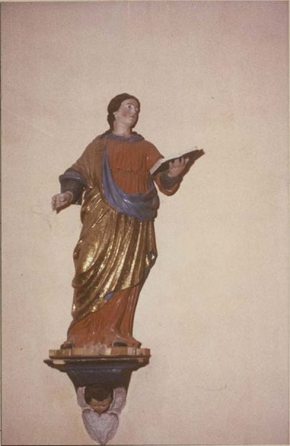Statue de Saint Jean l'Evangéliste dans l'église, 18e siècle ; photographe : Pauc Jean
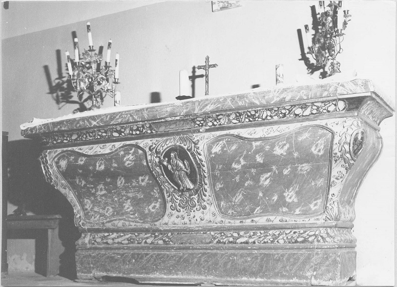Maître-autel dans l'église, 18e siècle ; photographe : Pauc Jean
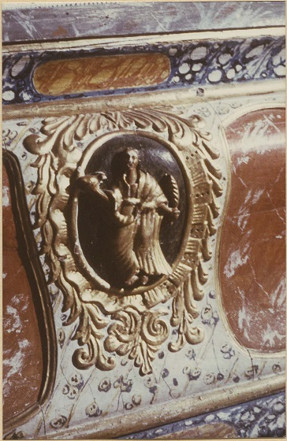Maître-autel (détail) dans l'église, 18e siècle ; photographe : Pauc Jean
Fonts baptismaux (cuve baptismale) dans l'église Saint-Valentin, 12e siècle ; photographe : Pauc Jean
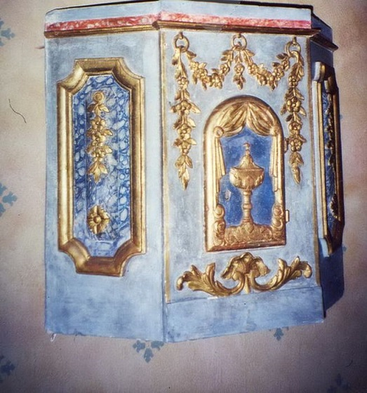Tabernacle dans l'église Saint-Valentin, 1er quart 18e siècle ; photographe : Amigues François
Statue de Saint Martin dans l'église Saint-Martin, 17e siècle ; photographe : Pauc Jean
Les 5 photos ci dessous sont issues de © Ministère de la Culture (France), diffusion RMN-GP.Usine hydroélectrique de Nentilla ; Ensemble est sur l'Aude depuis la RD 118
Vallée de l'Aude : cascade artificielle de Moulin-du-Pont ; Escouloubre
Station thermale d'Escouloubre-les-bains; Les gorges de l'Aude
Eglise d'Escouloubre ; Bénitier, vue générale (Date de l'oeuvre : 1609)
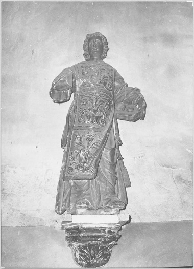Eglise d'Escouloubre ; Statue : saint Etienne, vue générale (du 17e siècle)
Les photos suivantes sont issues de © Monuments Historiques - elles montrent le village d'Escouloubre
Eglise d'Escouloubre ; Façade ouest et son clocher.
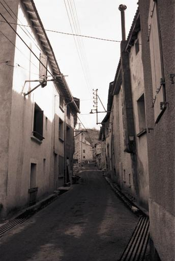Maison d'Escouloubre ; Rue de l'église
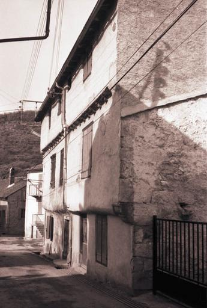Maison d'Escouloubre ; Maison à corbeau portant une date gravée
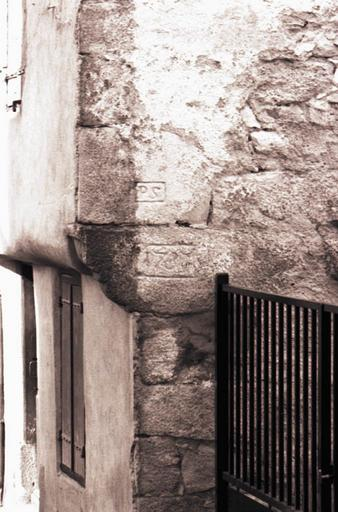Maison d'Escouloubre ; Maison accolée à l'église portant la date de 1737
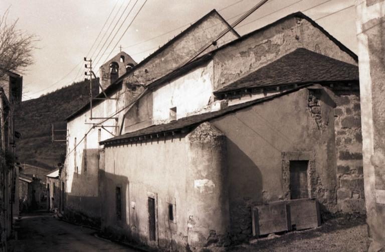Eglise d'Escouloubre ; Vue de la façade nord et de l'abside
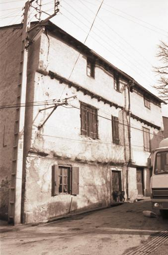Maison d'Escouloubre ; Maison accolée à l'église portant la date de 1737
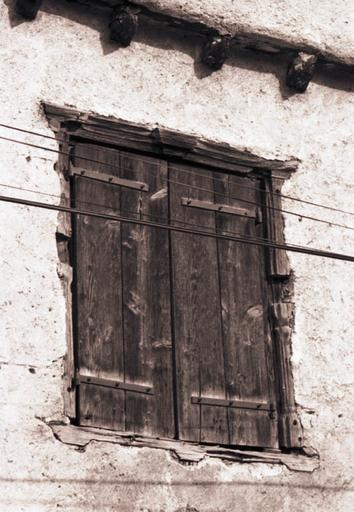Maison d'Escouloubre ; Maison datée 1737 : détail d'une fenêtre à croisée en bois
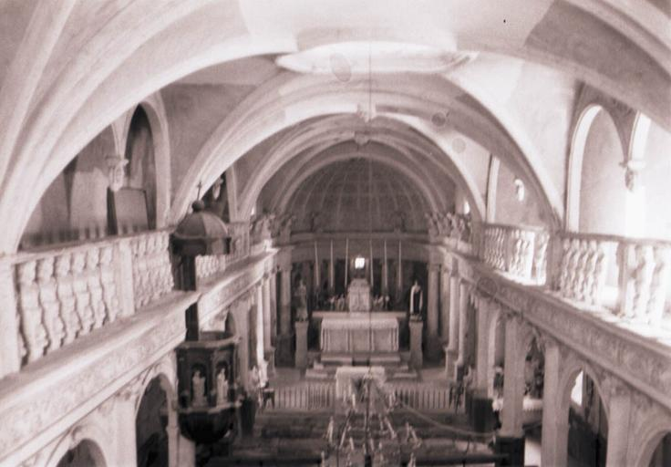Eglise d'Escouloubre ; Vue intérieure de l'église, nef vers le choeur
Maison d'Escouloubre
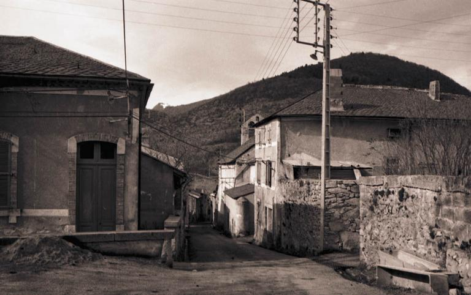Maison d'Escouloubre
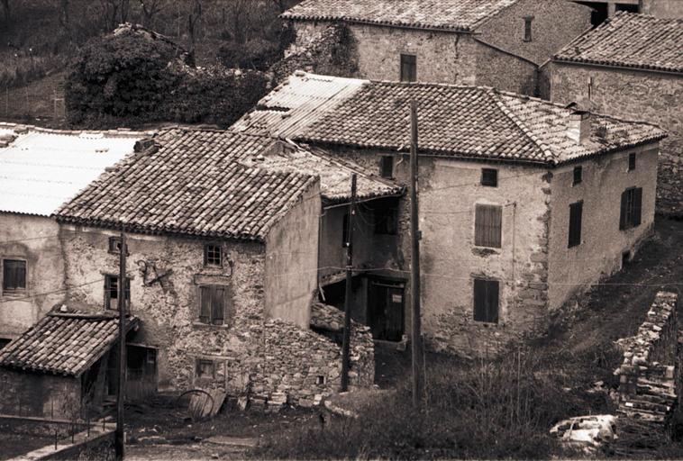Maison d'Escouloubre
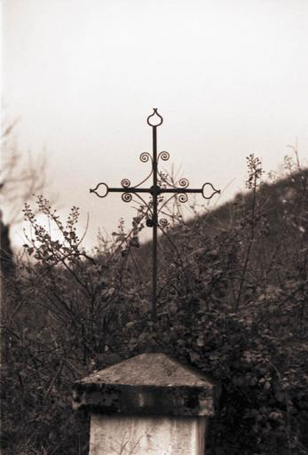Croix d'Escouloubre
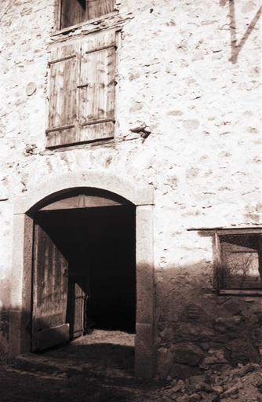Portail d'Escouloubre
1 Cartes postales proposée par l' © Inventaire général Région Occitanie sur les stations thermales d'Escouloubre les bains et Carcanières - cliquer sur les cartes concernées pour accéder à la notice correspondante